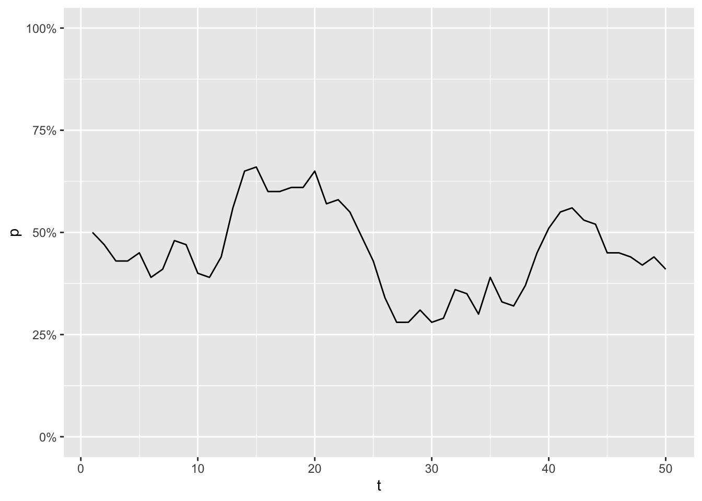
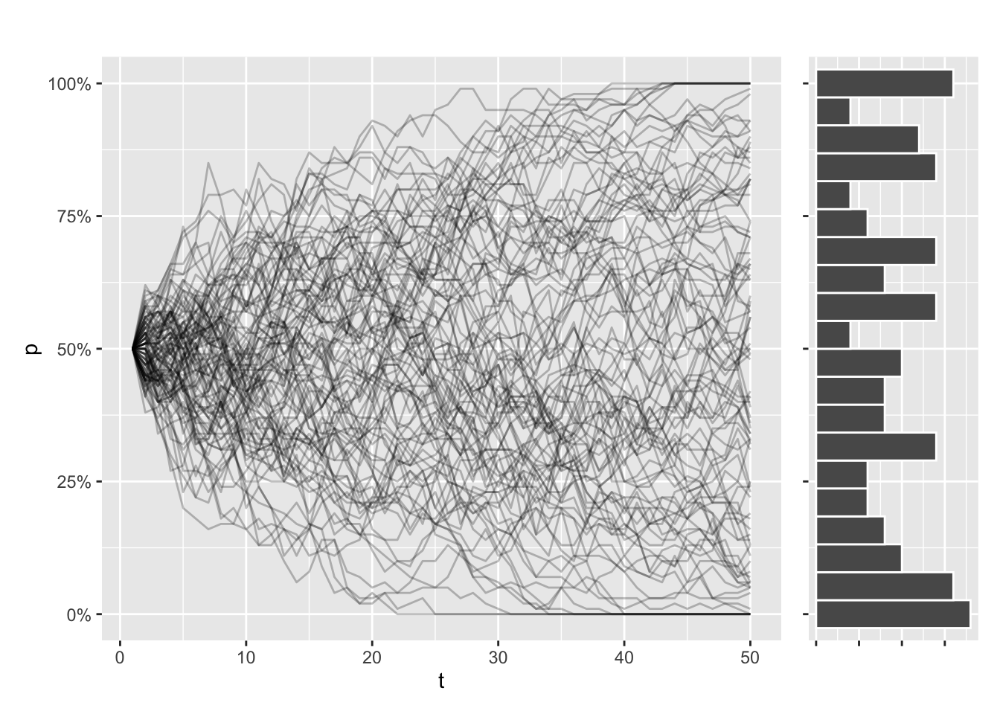
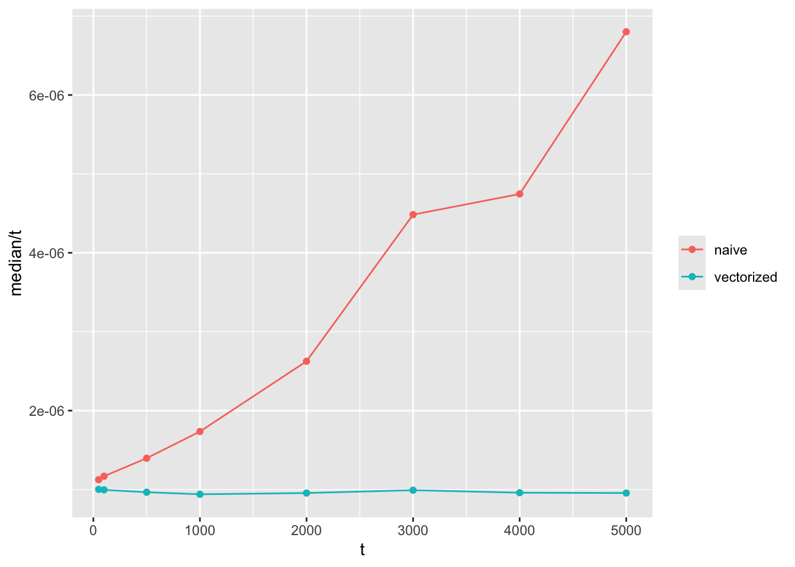
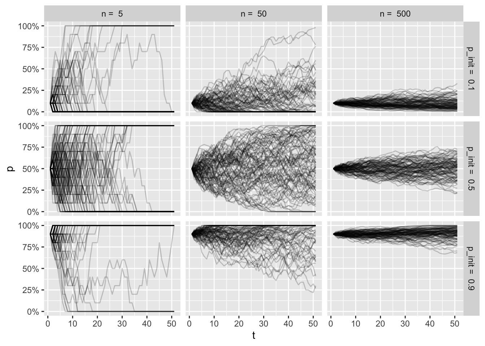
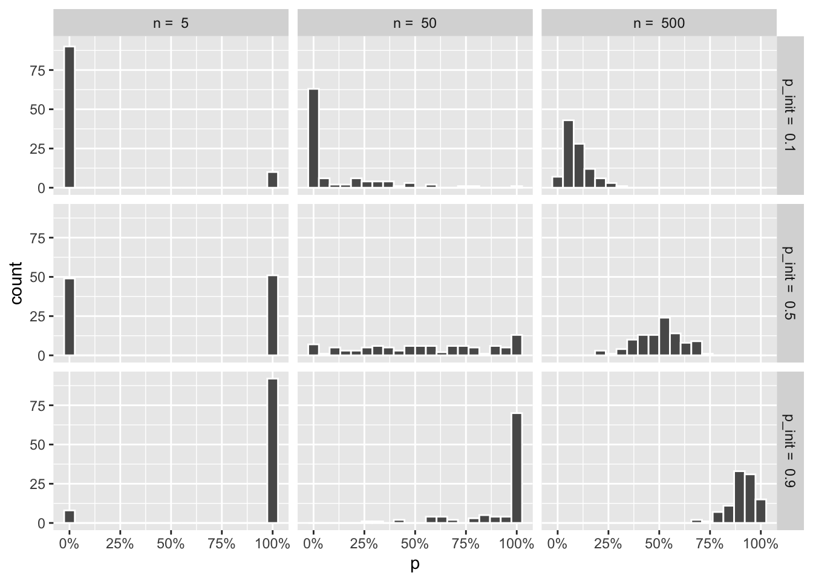
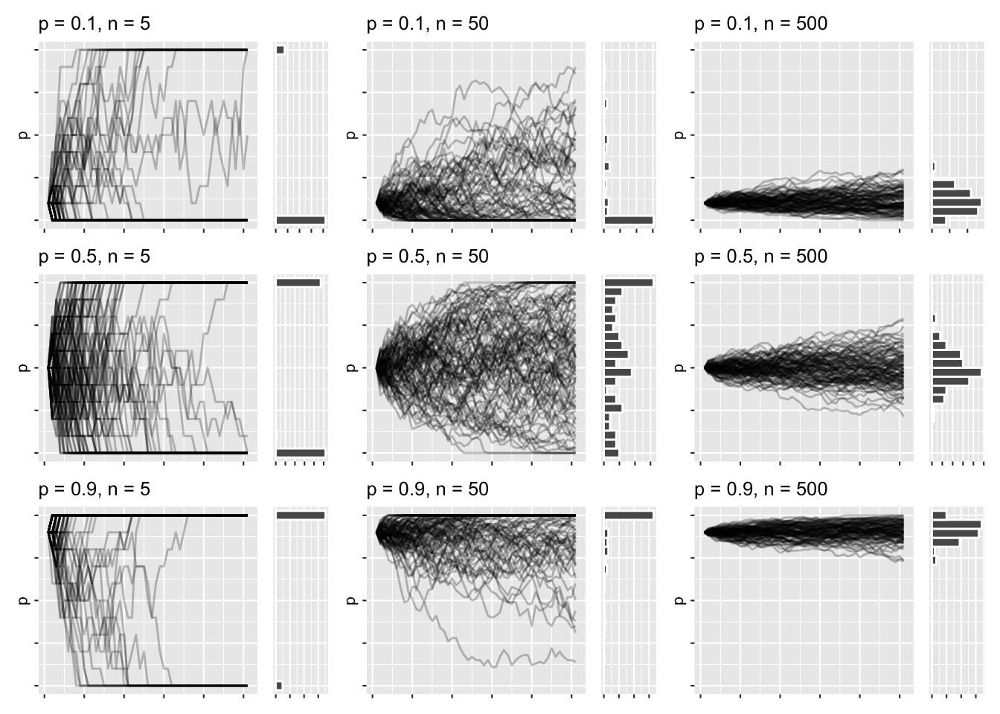
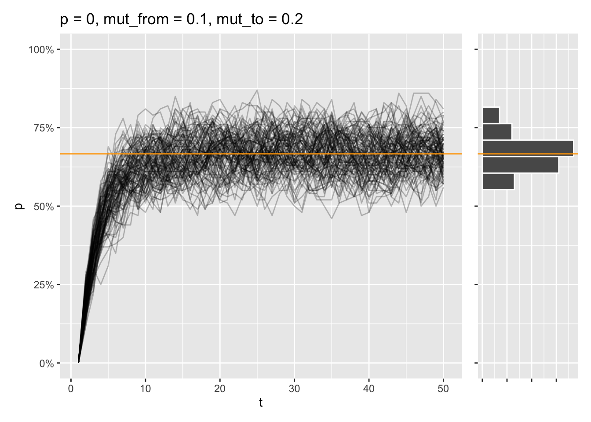

wf_sim <- function(p = .5, n = 50, t = 50) {
freqs <- c(p)
for(i in 2:t) {
freqs <- c(freqs, rbinom(1, size = 2*n, prob = freqs[i - 1]) / (2*n))
}
freqs
}Wright-Fisher simulations in R
How do random changes shape the genetic makeup of a population? Explore the Wright-Fisher model to understand genetic drift, visualize its effects, and how to implement it in R.
This post is for R users (like me), who are interested in evolutionary biology, population genetics, and simulation studies. I’ll go through a few technical implementations of genetic drift in R, visualise the output, and interpret the results. Along the way, I’ll show a simple shiny app to understand the parameters of the model.
I hope this helps you build some intuition for Wright-Fisher simulation. Much of what I’m about to show is the mental gymnastics I had to perform to get this concept.
The Wright Fisher model
Much of my time as an undergraduate was spent obsessing over allele frequencies. I was/am specifically interested in how certain copies of genes become prominent in a population, or disappear entirely. While it’s true that much of it can be explained by things like natural selection or de novo mutations, allele frequencies in a population just generally change over time by chance alone.
This is a process is called genetic drift, and is especially noticeable in small, isolated populations. You typically notice this in sudden reduction of population size, like a natural disaster, or a migration of a small group.
A common model used to simulate this is called the Wright-Fisher model, which assumes that:
The size of the population is constant over time.
The generations don’t overlap.
The change in allele frequencies is a stochastic process.
Allele frequency of each generation comes from sampling a binomial distribution based on the frequency of previous generation. Repeat this enough times, and the allele will eventually be be fixed or lost (all individuals modeled have the allele, or the allele is lost entirely).
Shiny app (tl;dr)
This post gets into the weeds of how this stuff is implemented. If your aim is just to understand the model, I’d suggest messing around with this app:
#| '!! shinylive warning !!': |
#| shinylive does not work in self-contained HTML documents.
#| Please set `embed-resources: false` in your metadata.
#| standalone: true
#| viewerHeight: 840
library(patchwork)
library(ggplot2)
library(scales)
library(tibble)
library(shiny)
library(dplyr)
helper <- function(n = 250, p = .5, t = 100L, mut_to = 0, mut_from = 0,
fit_AA = 1, fit_Aa = 1, fit_aa = 1) {
purrr::accumulate(
.x = vector("numeric", t - 1),
.f = ~ {
# Calculate average fitness of the population
fit_avg = .x ^ 2 * fit_AA + 2 * .x * (1 - .x) * fit_Aa + (1 - .x) ^ 2 * fit_aa
# Calculate frequency after selection and mutation
p_sel = (.x * (.x * fit_AA + (1 - .x) * fit_Aa)) / fit_avg
p_sel_mut = (1 - mut_from ) * p_sel + (1 - p_sel) * mut_to
},
.init = p
)
}
wf_sim <- function(n = 250, p = .5, t = 100L, mut_to = 0, mut_from = 0,
fit_AA = 1, fit_Aa = 1, fit_aa = 1) {
# Simulate allele frequency changes using purrr::accumulate
allele_frequencies <- purrr::accumulate(
.x = vector("numeric", t - 1),
.f = ~ {
# Calculate average fitness of the population
fit_avg = .x ^ 2 * fit_AA + 2 * .x * (1 - .x) * fit_Aa + (1 - .x) ^ 2 * fit_aa
# Calculate frequency after selection and mutation
p_sel = (.x * (.x * fit_AA + (1 - .x) * fit_Aa)) / fit_avg
p_sel_mut = (1 - mut_from ) * p_sel + (1 - p_sel) * mut_to
# Generate next generation allele frequency
rbinom(1, 2 * n, p_sel_mut) / (2 * n)
},
.init = p
)
return(allele_frequencies)
}
wf_plot <- function(..., num_sims = 100L, show_hist = FALSE) {
if(num_sims < 1) stop("Invalid value of 'num_sims'")
plot_df <- reframe(
group_by(
tibble(sim = 1:num_sims), sim),
p = wf_sim(...), t = seq_along(p)
)
a <- seq_along(helper(...))
b <- helper(...)
p1 <- ggplot2::ggplot(plot_df, ggplot2::aes(x = t, y = p, group = sim)) +
ggplot2::geom_line(linewidth = .8, alpha = .5) +
geom_line(
data = tibble(a = a, b = b), aes(x = a, y = b, group = NULL),
linewidth = 1, color = "orange"
) +
ggplot2::scale_y_continuous(labels = scales::percent, limits = c(0, 1)) +
ggplot2::labs(
title = "Wright-Fisher simulation of genetic drift",
subtitle = "Allele freq. (A)",
x = "Generation", y = "Allele freq."
)
if(show_hist) {
p2 <- ggplot2::ggplot(
data = dplyr::slice(dplyr::group_by(plot_df, sim), dplyr::n()),
aes(p)) +
ggplot2::geom_histogram(color = "white", binwidth = .025, boundary = 0) +
ggplot2::scale_x_continuous(limits = c(0, 1), oob = scales::squish) +
ggplot2::coord_flip() +
ggplot2::theme(axis.title.y = ggplot2::element_blank()) +
ggplot2::labs(
subtitle = "Freq(A) distribution",
y = "Count"
) +
ggplot2::theme(
axis.text.y = ggplot2::element_blank(),
panel.grid.minor.x = ggplot2::element_blank()
)
return((p1 + p2) + patchwork::plot_layout(widths = c(.8, .2)))
}
p1
}
ui <- bslib::page_sidebar(
title = "Simulate Genetic Drift",
sidebar = bslib::sidebar(
shiny::sliderInput("p", label = "Initial allele freq. (p)", min = 0, max = 1, value = .5, ticks = FALSE),
shiny::sliderInput("n", label = "Population size (n)", min = 1, max = 500, value = 250, ticks = FALSE),
shiny::sliderInput("t", label = "Number of generations", min = 1, max = 200, value = 100, ticks = FALSE),
shiny::sliderInput("mut_to", label = "Mutation rate (a -> A)", min = 0, max = 1, value = 0, ticks = FALSE),
shiny::sliderInput("mut_from", label = "Mutation rate (A -> a)", min = 0, max = 1, value = 0, ticks = FALSE),
shiny::div(
style = "display: flex; flex-direction: row;",
shiny::numericInput("fit_AA", "Fit AA:", value = 1, step = .1),
shiny::numericInput("fit_Aa", "Fit Aa:", value = 1, step = .1),
shiny::numericInput("fit_aa", "Fit aa:", value = 1, step = .1)
),
shiny::numericInput("num_sims", label = "Number of simulations", value = 100, min = 1),
shiny::radioButtons("show_hist", label = "Histogram", choices = c("Show", "Hide"), selected = "Hide"),
shiny::actionButton("reset", label = "Reset")
),
bslib::card(shiny::plotOutput("simplot"), width = "80%")
)
server <- function(input, output, session) {
input_values <- shiny::reactiveValues(
p = 0.5,
n = 250,
t = 100,
mut_from = 0,
mut_to = 0,
fit_AA = 1,
fit_Aa = 1,
fit_aa = 1,
num_sims = 100,
show_hist = "Hide"
)
shiny::observe({
input_values$p <- input$p
input_values$n <- input$n
input_values$t <- input$t
input_values$mut_from <- input$mut_from
input_values$mut_to <- input$mut_to
input_values$fit_AA <- input$fit_AA
input_values$fit_Aa <- input$fit_Aa
input_values$fit_aa <- input$fit_aa
input_values$num_sims <- input$num_sims
input_values$show_hist <- input$show_hist
})
output$simplot <- shiny::renderPlot({
wf_plot(
n = input_values$n,
p = input_values$p,
t = input_values$t,
mut_from = input_values$mut_from,
mut_to = input_values$mut_to,
fit_AA = input_values$fit_AA,
fit_Aa = input_values$fit_Aa,
fit_aa = input_values$fit_aa,
num_sims = input_values$num_sims,
show_hist = input_values$show_hist == "Show"
)
})
shiny::observeEvent(input$reset, {
# Reset input_values to their default values
input_values$p <- 0.5
input_values$n <- 250
input_values$t <- 100
input_values$mut_from <- 0
input_values$mut_to <- 0
input_values$fit_AA <- 1
input_values$fit_Aa <- 1
input_values$fit_aa <- 1
})
shiny::observeEvent(input$reset, {
# Reset all input values to their default values
shiny::updateSliderInput(session, "p", value = 0.5)
shiny::updateSliderInput(session, "n", value = 250)
shiny::updateSliderInput(session, "t", value = 100)
shiny::updateSliderInput(session, "mut_from", value = 0)
shiny::updateSliderInput(session, "mut_to", value = 0)
shiny::updateNumericInput(session, "fit_AA", value = 1)
shiny::updateNumericInput(session, "fit_Aa", value = 1)
shiny::updateNumericInput(session, "fit_aa", value = 1)
})
}
shiny::shinyApp(ui, server)
(I’m not 100% there yet - the histograms break the app, but I am on it!)
Visualising drift
The following code shows my first attempt at implementing the process. This approach is pretty inefficient, and I’ll get into why a bit later in the post:
Imagine a population of 50 animals, where you are able to measure the frequency of an allele A, once every generation. The frequency turns out to be 50% at the first generation, but for every generation that changes a little bit:
library(tidyverse)
enframe(wf_sim(), name = "t", value = "p") %>%
ggplot(aes(x = t, y = p)) +
geom_line() +
scale_y_continuous(labels = scales::percent, limits = c(0,1))
Now imagine simulating this process 100 times. Even as every simulation started with the same allele frequency, every trajectory will look different. Some simulations will even have fixed or lost the allele, purely due to chance.
Let’s try to illustrate that. This function draws the allele trajectories for every simulation, along with a histogram of the distribution of allele frequencies at the final generation. I use patchwork to stitch my plots together:
library(patchwork)
draw_sims <- function(sims = 100, sim_function = wf_sim, ...) {
dots <- list(...)
df <- tibble(sim = seq_along(1:sims)) %>%
group_by(sim) %>%
reframe(
p = sim_function(...), t = seq_along(p)
) %>%
ungroup()
p1 <- df %>%
ggplot(aes(x = t, y = p, group = sim)) +
geom_line(alpha = .25) +
scale_y_continuous(labels = scales::percent, limits = c(0,1)) +
labs(title = paste(
names(dots), unlist(dots), sep = " = ", collapse = ", ")
)
p2 <- df %>%
filter(t == max(t)) %>%
ggplot(aes(y = p)) +
geom_histogram(bins = 20, color = "white") +
scale_y_continuous(
labels = scales::percent,
oob = scales::oob_keep,
limits = c(0,1)
) +
# coord_flip() +
theme(axis.text = element_blank(), axis.title = element_blank())
p1 + p2 + plot_layout(design = "AAAAB", axes = 'collect')
}
draw_sims() 
This trajectory is dependent on population size. In smaller populations, the trajectories will be all over the place, and the eventual loss or fixation of an allele will be much more likely. The opposite is true for larger populations, and it’s going to take a lot longer for the allele to take over or disappear completely.
draw_sims(n = 10) / draw_sims(n = 500) 
If you’re new to R programming, you might notice the use of ... ellipses in the draw_sims function. This is one of the ways R is so outrageous for programmers coming from other languages. This allows me to pass additional arguments to wf_sim() with less hard-coding. It’s kind of a rabbit hole if I elaborate, so I’m just going to gloss over that for now.
Another thing I like about the function is the fact that I can pass another function as an argument. It’s one of the hallmarks of functional programming, and it’s super easy to implement this style of programming in R. I do this because I plan on experimenting with a few different ways to implement wf_sim(), and it saves me the hassle of writing a draw function for each one.
Must go faster
If you play around with wf_sim() as it’s written right now, you’ll notice that it’s slow, especiqally as t increases. This is because this part of the function is quite expensive:
wf_sim <- function(p = .5, n = 50, t = 50) {
freqs <- c(p)
for(i in 2:t) {
freqs <- c(freqs, rbinom(1, size = 2*n, prob = freqs[i - 1]) / (2*n))
}
freqs
}In each iteration of the loop, R creates a new vector to handle the additional value being appended. This new vector has to copy all of the values from the previous step in the loop, and this repeats when you get to the next step.
Pre-allocating vectors
What you want to do instead is pre-allocate a vector with the full length, before you start looping. The loop should then update a specific index at each iteration. This removes the need to copy all the values every time (or at least that’s what I think is going on).
wf_sim_vectorized <- function(p = .5, n = 50, t = 50) {
freqs <- vector(mode = "numeric", length = t)
freqs[1] <- p
for(i in 2:t) {
freqs[i] <- rbinom(1, size = 2*n, prob = freqs[i - 1]) / (2*n)
}
freqs
}Let’s test if this approach is faster, using bech::mark:
bench::mark(
wf_sim(t = 5000),
wf_sim_vectorized(t = 5000),
check = FALSE
)# A tibble: 2 × 6
expression min median `itr/sec` mem_alloc `gc/sec`
<bch:expr> <bch:tm> <bch:tm> <dbl> <bch:byt> <dbl>
1 wf_sim(t = 5000) 28.57ms 31.43ms 31.2 107.8MB 85.7
2 wf_sim_vectorized(t = 5000) 4.56ms 4.98ms 157. 12.2MB 43.6That looks about right. My hunch is that the time it takes for the first approach to run increases by \(O(t^2)\) as the number of generations increases, while the vectorized function should run in linear time \(O(t)\).
The way I usually test this is to visualise it by graphs like these:
tibble(t = c(50, 100, 500, 1000, 2000, 3000, 4000, 5000)) %>%
mutate(benchmarks = map(t, ~{
bench::mark(
naive = wf_sim(t = .x),
vectorized = wf_sim_vectorized(t = .x),
check = FALSE
)
})) %>%
unnest(benchmarks) %>%
ggplot(aes(x = t, y = median / t, color = as.character(expression))) +
geom_line() +
geom_point() +
labs(color = NULL)
Note that the y axis is time to compute divided by \(t\). If the function grows in linear time with \(t\), we expect a flat horizontal line, while a function that grows quadratically will have a linear slope like the one shown here.
Functional programming
Examples like this is part of the reason why loops get such a bad rap in R. Some very common feedback I got when I was starting out R coding, was that I needed to iterate using the apply family of functions instead, or the map functions of purrr.
Let’s try to write the same function using a function from purrr. Because I’m building a vector that repeatedly uses the result of a previous index, it calls for a function named accumulate:
wf_sim_tidy <- function(p = .5, n = 50, t = 50) {
purrr::accumulate(
.x = vector(mode = "numeric", length = t),
.f = ~ rbinom(1, 2 * n, .x)/(2 * n),
.init = p
)
}The main advantage of writing code like this is the clearer syntax; not an increase in performance. This is another example of functional programming, and is a bit less verbose than declaring vectors and writing loops.
I used to think that functions like these were inherently faster than loops too, but if you actually compare the functions, you’ll see that there isn’t much to gain in terms of performance compared with our vectorized function. In fact, there’s going to be a bit of overhang to accumulate, so this version is a bit slower:
bench::mark(
wf_sim(t = 5000),
wf_sim_vectorized(t = 5000),
wf_sim_tidy(t = 5000),
check = FALSE
)# A tibble: 3 × 6
expression min median `itr/sec` mem_alloc `gc/sec`
<bch:expr> <bch:tm> <bch:tm> <dbl> <bch:byt> <dbl>
1 wf_sim(t = 5000) 30.22ms 32.52ms 27.4 107.8MB 103.
2 wf_sim_vectorized(t = 5000) 4.59ms 4.83ms 173. 12.2MB 43.7
3 wf_sim_tidy(t = 5000) 9.38ms 10.23ms 89.7 12.4MB 27.9The lesson here is that loops are fine. There are some benefits to the syntax in accumulate, but they come from the code being more legible and easier to maintain. These are completely valid reasons to prefer this implementation, but if you’re more worried about performance, you might as well stick with the humble loop.
Understanding Wright-Fisher
The reason I’m writing this code is to gain a better understanding of the factors contributing to genetic drift. That means looking at the distribution of allele frequencies at the end of simulation under varying conditions, namely:
- Population size
- Initial allele frequency
- Presence of mutation rates
- Presence of natural selection
Population size
At this point we’ve established that initial allele frequency and population size is important to our simulations. To really hammer that idea home, let’s make a high level visualization, that shows that in one big plot.
Let’s try to look at a few different pairings of initial frequency and population size. I’m choosing 3 values of p and 3 values of n, with the intent to show the simulation results for each possible pairing. I use crossing() to make those pairs:
crossing(p_init = c(.1, .5, .9), n = c(5, 50, 500))# A tibble: 9 × 2
p_init n
<dbl> <dbl>
1 0.1 5
2 0.1 50
3 0.1 500
4 0.5 5
5 0.5 50
6 0.5 500
7 0.9 5
8 0.9 50
9 0.9 500Now let’s make 100 simulations for each of these pairs:
wf_sims <- crossing(sim = 1:100, p_init = c(.1, .5, .9), n = c(5, 50, 500)) %>%
group_by(sim, p_init, n) %>%
reframe(
p = wf_sim_tidy(p = p_init, n = n),
t = seq_along(p)
) %>%
ungroup()
wf_sims# A tibble: 45,900 × 5
sim p_init n p t
<int> <dbl> <dbl> <dbl> <int>
1 1 0.1 5 0.1 1
2 1 0.1 5 0.1 2
3 1 0.1 5 0 3
4 1 0.1 5 0 4
5 1 0.1 5 0 5
6 1 0.1 5 0 6
7 1 0.1 5 0 7
8 1 0.1 5 0 8
9 1 0.1 5 0 9
10 1 0.1 5 0 10
# ℹ 45,890 more rowsWith a data frame like this, we can show the varying values of n and p using a faceted ggplot:
wf_sims %>%
ggplot(aes(x = t, y = p, group = sim)) +
geom_line(alpha = .2) +
facet_grid(paste("p_init = ", p_init) ~ paste("n = ", n)) +
scale_y_continuous(labels = scales::percent) 
It’s a bit overwhelming to look at all of this, but if you spend some time thinking about the factors for each facet, I hope to help you build some intuition of the trajectories for each condition.
Top left plot shows a tiny population, where the initial frequency is very low. As the frequency fluctuates so much with the small population size, many of the simulations end in fixation of the allele, even with low intial frequency.
Bottom right plot shows a large population with a high initial frequency. Here the trajectories are more stable, and very few simulation (if any) end in loss of the allele.
The frequencies at the end of the simulations get muddled out, though. Let’s look at the resulting distributions:
wf_sims %>%
filter(t == max(t)) %>%
ggplot(aes(x = p)) +
geom_histogram(color = "white", bins = 20) +
facet_grid(paste("p_init = ", p_init) ~ paste("n = ", n)) +
scale_x_continuous(labels = scales::percent) 
That gives me the distributions, but the plot I have in my head shows the combined line graphs, with the resulting distributions that came with the draw_sims function, as I found that helped me understand what was going on. It’s hard to show that with regular ggplot facets, so I’m resorting to draw 9 plots using draw_sims, and gathering them in a list:
wf_plots <- crossing(p_init = c(.1, .5, .9), n = c(5, 50, 500)) %>%
rowwise() %>%
mutate(plots = list(
draw_sims(sim_function = wf_sim_tidy, p = p_init, n = n)
)
) %>%
pull(plots) When I have this list of plots, I can wrap them up using the wrap_plots function of patchwork:
wrap_plots(wf_plots) &
theme_grey(base_size = 8) &
theme(
axis.text = element_blank(),
axis.title.x = element_blank()
)
This has roughly the same layout as the previous faceted graphs, except I get to marvel at the trajectories and distributions all at once. There’s a lot of high-level things going on right now, but I think it’s all in service of understanding the nature of the simulations, once you dwell a bit on each plot.
Mutation
Aside from genetic drift, the frequencies can also be impacted by the introduction of new alleles that happen by mutation. In a two-allele system, we can model this with 2 rates:
mut_from: Probability that that the allele A changes from its current state into another allele a.mut_to: The probability that the gene mutates from allele a into A.
This is relatively simple to include in the function:
wf_sim_mutation <- function(p = .5, n = 50, t = 50, mut_from = 0, mut_to = 0){
freqs <- vector(mode = "numeric", length = t)
freqs[1] <- p
for(i in 2:t) {
p_mut <- (1 - mut_from) * freqs[i - 1] + mut_to * (1 - freqs[i - 1])
freqs[i] <- rbinom(1, 2 * n, p_mut) / (2 * n)
}
freqs
}Say you model a population where a specific allele isn’t present at all. Because the allele is lost from the beginning, it will stay lost after 50 generations. But if you introduce a chance every generation, of say 10%, that the allele will appear by random mutation, that might be enough for the allele to fix in population for pretty much all simulations:
draw_sims(p = 0) |
draw_sims(sim_function = wf_sim_mutation, p = 0, mut_to = .10)
Another thing that fascinates me is the fact that a two-allele system like this has a mutation equilibrium, where the rates of mut_to and mut_from are equal. This leads to stable allele frequencies over time, regardless of initiall allele frequency, which can be predicted with this formula:
\[p_{\text{eq}} = \frac{\mu_{\text{ to}}}{\mu_{\text{ from}} + \mu_{\text{ to}}}\]
draw_sims(sim_function = wf_sim_mutation, p = 0, mut_from = .1, mut_to = .2) &
geom_abline(intercept = (.2) / (.1 + .2), slope = 0, color = "orange")
That equilibrium is reached, even if the allele is fixed from the start instead:
draw_sims(sim_function = wf_sim_mutation, p = 1, mut_from = .1, mut_to = .2) &
geom_abline(intercept = (.2) / (.1 + .2), slope = 0, color = "orange")Selection
At this point, I might as well mention selection. Selection introduces a bias in the allele frequencies being drawn at each generation, by favoring certain alleles, or genotypes. In our diploid two-allele system, where alleles are called \(A\) and \(a\), the relative fitness of each genotype can be denoted as \(w_{AA}\), \(w{Aa}\), and \(w_{aa}\). The probability of sampling allele \(A\) every generation will be adjusted as follows:
\[p_{\text{sel}} = \frac{p^2 \cdot w_{AA} + p \cdot q \cdot w_{Aa}}{p^2 \cdot w_{AA} + 2 \cdot p \cdot q \cdot w_{Aa} + q^2 \cdot w_{aa}}\]
Here: - p is the frequency of allele A, - q = 1 - p, which is the frequency of allele a, - \(w_{AA}\), \(w_{Aa}\), and \(w_{aa}\) are the fitnesses of the \(AA\), \(Aa\), and \(aa\) genotypes, respectively.
wf_sim_selection <- function(p = .5, n = 50, t = 50, fit_AA = 1, fit_Aa = 1, fit_aa = 1) {
freqs <- vector(mode = "numeric", length = t)
freqs[1] <- p
for(i in 2:t) {
# Calculate average fitness of the population
fit_avg <-
freqs[i - 1] ^ 2 * fit_AA +
(1 - freqs[i - 1]) ^ 2 * fit_aa +
2 * freqs[i - 1] * (1 - freqs[i - 1]) * fit_Aa
p_sel <-
(freqs[i - 1] * (freqs[i - 1] * fit_AA + (1 - freqs[i - 1]) * fit_Aa)) /
(fit_avg)
freqs[i] <- rbinom(1, 2 * n, p_sel) / (2 * n)
}
freqs
}Say that the aa genotype only has a relative fitness at half of the AA and Aa genotypes. Even if the a allele is the most prominent one at the start, most simulations will end in the A allele being fixed in these conditions.
draw_sims(sim_function = wf_sim_selection, p = 0.01, fit_aa = .5)
Still, some of simulations end in the \(A\) allele being lost, as the initial allele frequency is very low. At this point, there’s a tug-of-war going on, where genetic drift wants to delete the allele entirely, while selection tries to fix the allele completely.
Lessons learned
Wright-Fisher is a powerful tool to model and understand how various processes affect the genetic composition of populations. I hope this post helped you understand how population size, mutation, and selection interact with genetic drift to shape allele frequencies in a population.
Population size matters. Small populations show faster fixation or loss of alleles, as random genetic drift is much stronger here.
Mutation and selection counteract drift.
Implementation matters for efficiency. Some of the simulation functions implemented here produced the exact same output, but had vastly different run times.
I think the most powerful part of this whole thing is the inclusion of the shinylive app. Tinkering with tools like this is probably the most effective way of gaining intuition for these kinds of models - that along with effective visualization.